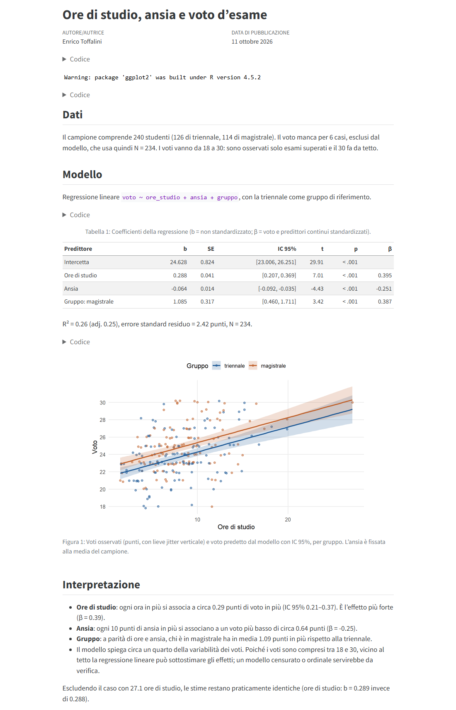
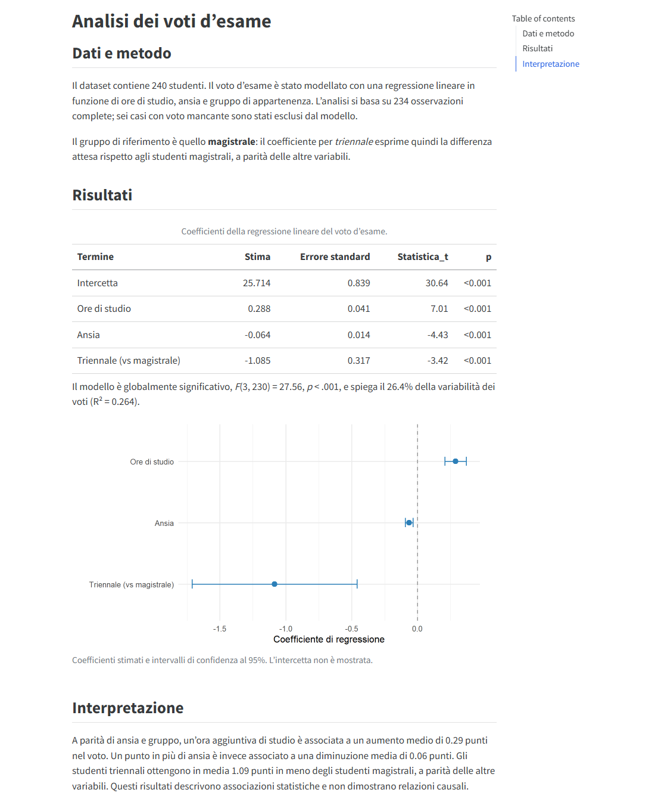

Chi usa l’AI solo dalla chat nel browser ne sta usando una frazione. Gli agenti AI in locale, come Claude Code di Anthropic e Codex di OpenAI, lavorano direttamente sui file del vostro computer: leggono una cartella di progetto, scrivono e modificano script, li eseguono, guardano gli errori, correggono, rieseguono. Non vi restituiscono un pezzo di codice da copiare e incollare: fanno il lavoro nella cartella e vi dicono cosa hanno fatto. Si possono usare dal terminale (command line interface, CLI), che è il modo che preferisco, oppure da app desktop, che fanno lo stesso lavoro con menu e pannelli al posto dei comandi.
Questo post ha quattro parti:
- una parte generale su cosa cambia rispetto alla chat nel browser (questa pagina);
- una guida passo-passo a Claude Code da terminale;
- una guida passo-passo a Codex da terminale;
- una guida alle app desktop di entrambi, per chi preferisce evitare il terminale.
Le guide mostrano installazione, primo utilizzo, scelta del modello e dello sforzo di ragionamento (effort), controllo dei limiti di utilizzo e modalità di lavoro (automatica, con approvazione, plan). Non sono guide esaustive. Coprono le cose che servono per partire.

Cosa cambia rispetto alla chat nel browser
1. L’agente lavora sui vostri file, non su copie incollate
Nella chat si carica un file, si riceve una risposta, si copia il codice in RStudio, si lancia, si incolla l’errore nella chat, e così via. Con un agente in locale questo ciclo sparisce. Lo lanciate dentro una cartella (dal terminale, o selezionandola nell’app) e lui vede tutto quello che c’è: dati, script, documenti Quarto, bibliografie, configurazioni. Può creare file nuovi, modificare quelli esistenti, eseguire R, Python, Quarto, Git, e qualsiasi altro programma installato.
La differenza pratica è enorme quando il progetto non è un singolo script ma una repository con decine di file che dipendono l’uno dall’altro: un articolo con analisi, figure e supplementari; un sito; un pacchetto R; una app.
2. Il contesto è ricco e non va aggiornato a mano
In chat il contesto è quello che incollate voi, e va ricostruito a ogni nuova conversazione. L’agente invece ricostruisce il contesto leggendo il progetto stesso: la struttura delle cartelle, il codice, la cronologia Git, i file di istruzioni del progetto (CLAUDE.md per Claude Code, AGENTS.md per Codex), che possono contenere convenzioni, obiettivi, cose da non toccare. Se il progetto cambia, il contesto cambia con lui, senza che dobbiate ricaricare nulla.
A questo si aggiungono le skill: file di istruzioni riutilizzabili su come fare certe cose (ad esempio come scrivo codice, come imposto un report, come scrivo una email). L’agente le carica quando servono. Le mie sono pubbliche qui. Nella demo della guida a Codex si vede Codex che, prima di proporre un report, va a leggersi da solo la mia skill sullo stile dei report scientifici. Ne parlo in dettaglio nel post dedicato alle skill.
3. Molto più controllo sul processo
Sembra un paradosso, ma l’agente che “fa da solo” dà più controllo della chat, non meno:
- vedete ogni comando che esegue e ogni modifica ai file, riga per riga;
- decidete il livello di autonomia: approvare ogni azione, approvare solo quelle rischiose, oppure chiedere prima un piano e solo dopo l’esecuzione;
- se il progetto è sotto Git (vivamente consigliato: vedi il tutorial su Git e GitHub), ogni modifica è tracciata e reversibile;
- i risultati sono script e file veri, eseguibili e riproducibili, non testo in una chat.
4. Può agire anche fuori dal computer, tramite connettori
Attraverso i connettori (tecnicamente server MCP) e l’estensione per il browser, un agente può leggere la posta, inserire impegni nel calendario, lavorare su Google Drive, navigare siti web, compilare moduli. Questo va abilitato esplicitamente e richiede cautela, ma apre possibilità notevoli. Qualche esempio dal mio uso reale:
- far rivedere a Claude l’intera struttura di un corso Moodle, inclusi forum e quiz, segnalando problemi, incoerenze e contraddizioni tra le varie parti;
- farmi assistere in una pratica online, nello specifico la richiesta di assegnazione del medico di base, navigando il sito e compilando i campi per mio conto;
- una skill che legge le mail recenti e inserisce automaticamente riunioni, scadenze e impegni nel calendario giusto, secondo le mie categorie e convenzioni sui nomi, e poi mi riporta cosa ha fatto per la verifica.
Una nota pratica: in questo momento Codex con l’account ChatGPT Edu fornito dall’ateneo non può usare il browser, perché questa funzione è disattivata per scelta dell’ateneo. Claude Code con l’estensione per Chrome invece funziona.
5. Soprattutto: progetti interi, in locale, con molta potenza
Il punto di forza principale resta però la creazione e gestione di progetti complessi. Qualche esempio di cose che ho sviluppato negli ultimi mesi lavorando con questi agenti:
- progetti di ricerca con revisione della letteratura e simulazioni (es. Most interactions are wrong; Taxometrics in neurodevelopmental disorders);
- siti didattici articolati (es. Psicologia dell’intelligenza);
- app interattive (es. un laboratorio su dimensioni continue e categorie diagnostiche e perfino una demo di videogioco in Godot);
- siti statici ed edizioni web di testi, con originale, traduzione e glossario (es. questo piccolo sito informativo sugli indici IDS-2, o godetevi queste Diatribe di Epitteto);
- raccolte documentali (es. trasparenza e dati normativi).
Molte di queste cose richiederebbero competenze di sviluppo web o software che chi fa ricerca in psicologia di solito non ha. Con un agente si possono fare, purché si sappia cosa si vuole e si controlli quello che viene prodotto.
Un esempio concreto: stesso compito, due agenti
Per le guide ho dato a entrambi gli agenti lo stesso compito, nella stessa cartella con lo stesso dataset simulato (240 studenti, ore di studio, ansia, gruppo triennale/magistrale, voto d’esame).
La richiesta era questa:
In questa cartella c’è dati_esame.csv. Dai un’occhiata ai dati, poi scrivi uno script R chiamato analisi.R che stima una regressione del voto su ore_studio, ansia e gruppo, eseguilo e spiegami i risultati in poche righe.
Entrambi hanno impiegato circa 25 secondi e ottenuto gli stessi coefficienti. Poi ho chiesto, in modalità plan, di trasformare l’analisi in un breve report Quarto con un grafico e una tabella. Questi sono i due report prodotti, senza alcun ritocco:


Due dettagli istruttivi. Primo: i due agenti hanno fatto scelte diverse ma entrambe legittime (gruppo di riferimento opposto, grafico diverso, tabella con o senza coefficienti standardizzati). Claude ha anche segnalato spontaneamente un limite reale dei dati: il voto ha un tetto a 30, quindi la regressione lineare può sottostimare gli effetti. Secondo: nessuno dei due vi esonera dal leggere quello che hanno fatto. Sono strumenti molto capaci, non arbitri della correttezza.
Cose da sapere prima di cominciare
Bisogna investire qualcosa
Siamo onesti: servono piani a pagamento. I piani gratuiti non includono Claude Code, e per Codex offrono al massimo un assaggio molto limitato. I listini sono in dollari e IVA esclusa: in Italia all’importo si aggiunge l’IVA al 22%. Indicativamente, a ottobre 2026:
- Claude Code: richiede almeno il piano Pro, che in Italia costa di fatto circa 22 € al mese IVA inclusa (un po’ meno con pagamento annuale). Per un uso intenso servono i piani Max, che partono da 100 $ al mese più IVA, quindi oltre 100 € al mese.
- Codex: è incluso nei piani ChatGPT Plus (20 $ al mese più IVA, quindi anche qui poco più di 20 € al mese), Pro, Business, Edu ed Enterprise.
I prezzi cambiano spesso; verificate sulle pagine ufficiali (Claude, ChatGPT). Con i piani base i limiti di utilizzo (calcolati su finestre di 5 ore e su base settimanale) si raggiungono abbastanza in fretta se si lavora su progetti grandi o con i modelli più potenti. Nelle guide mostro come controllarli.
In breve: quando un limite si esaurisce, l’agente si ferma fino all’azzeramento. Il consumo dipende dalla quantità di lavoro più che dal numero di messaggi: modelli più potenti, effort più alto e conversazioni lunghe consumano di più. A differenza dell’uso via API, dove si paga per token, nei piani in abbonamento non è definito con precisione quanto lavoro stia in una finestra; ci si regola con un po’ di esperienza. Nella mia esperienza, se non si sviluppa software o progetti molto articolati, una finestra di 5 ore basta per numerosi compiti, anche con ragionamento elevato e modelli medio-avanzati, sia con Claude Code sia con Codex. Chi ha bisogno di più può passare a un piano superiore o, se il piano lo prevede, pagare a consumo oltre i limiti (extra usage su Claude, crediti su Codex); queste opzioni vanno attivate esplicitamente.
Se la vostra università fornisce già un piano (ad esempio ChatGPT Edu), tanto meglio: partite da quello. Se dovete pagare di tasca vostra, poco più di 20 euro al mese sono una spesa che, per come la vedo io, si ripaga rapidamente in tempo risparmiato.
Terminale o app desktop: la stessa superpotenza
Il terminale sembra ostile, ma qui serve pochissimo: aprirlo nella cartella giusta (tasto destro → Apri nel terminale) e scrivere claude oppure codex. Da lì in poi si parla in italiano. Le guide mostrano ogni passaggio con screenshot.
Io preferisco il terminale per come lavoro. Non apro l’app dell’AI chiedendomi “oggi cosa facciamo con l’AI?”: lavoro normalmente sulle mie cartelle e sui miei file, e quando mi accorgo che lì sarebbe utile un agente apro il terminale in quella cartella e lo chiamo. L’agente entra nel mio lavoro, non il contrario.
Chi però col terminale proprio non si trova ha un’alternativa che fa lo stesso lavoro in locale: le app desktop di Claude (scheda Code) e di ChatGPT (sezione Codex). Si sceglie la cartella da un menu, e l’agente legge, scrive, esegue, usa le stesse skill. Le app aggiungono anche qualcosa: menu al posto dei comandi, pannelli con le modifiche ai file riga per riga, un terminale e un browser integrati, le sessioni ordinate per progetto. Il prezzo, secondo me, è un flusso un po’ meno fluido: ogni volta bisogna indicare all’app la cartella su cui lavorare, e in Codex la cartella diventa un “progetto” dell’app. È tutto mostrato, con screenshot, nella guida alle app desktop. Esistono anche estensioni per VS Code e simili.
Precauzioni
- Usate Git, o almeno lavorate su copie. Un agente può modificare o cancellare file: con Git ogni modifica è reversibile.
- Dati sensibili: non fate lavorare un agente su dati personali di partecipanti senza essere sicuri che sia consentito dalle regole del vostro ente e dalla normativa sulla protezione dei dati. I file che l’agente legge vengono inviati ai server del fornitore.
- Autonomia graduale: all’inizio lasciate che l’agente chieda il permesso prima di agire, oppure chiedete prima un piano. Passate alle modalità più autonome quando avete capito come si comporta.
- Responsabilità: l’agente scrive codice che gira e produce numeri plausibili. Che i numeri siano anche giusti, e che l’analisi sia quella appropriata, resta compito vostro.
Le guide
- → Guida a Claude Code: installazione, primo progetto,
/model,/effort,/usage, modalità auto, manual, accept edits, plan. - → Guida a Codex: installazione, primo progetto,
/model, livello di ragionamento,/status,/permissions, plan mode. - → Guida alle app desktop: le stesse cose senza terminale, nell’app Claude e nell’app ChatGPT/Codex, più quello che le app aggiungono (pannelli per modifiche, file, terminale e browser).